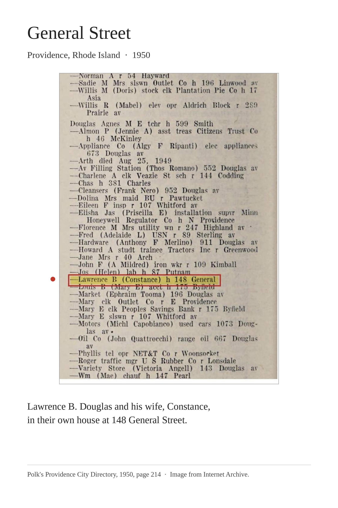

1950 Providence directory: 148 General Street
Polk's Providence City Directory, 1950, page 214. Image from Internet Archive.

The entry is marked in red and highlighted.
What this document is
A city directory: a yearly book, like a phone book, listing every adult in Providence with their job and home address. The “h” means the family lived in that house.
What it says
- Douglas, Lawrence B (Constance), house 148 General Street.
Why it matters
It places Laurence and Constance in their own home on General Street in the North End of Providence.